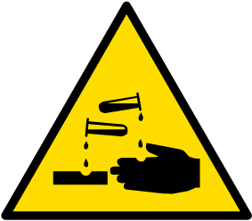

Los colores de las señales de seguridad están normalizados. Principalmente deben llamar la atención para poder identificarlos inmediatamente con su significado correspondiente.
Los colores de seguridad pueden formar parte de una señalización de seguridad o constituir una por sí mismos. En el siguiente cuadro se muestran los colores de seguridad, el significado que tienen y otras indicaciones sobre su uso:
Cuando el color de fondo sobre el que se aplicará el color de seguridad puede dificultar la percepción de este último, se debe utilizar un color de contraste que enmarque el de seguridad o se alterne. Cuando la señalización de un elemento se hace mediante un color de seguridad, las dimensiones de la superficie con color deben guardar proporción con las del elemento y permitir su identificación.
En las siguientes tablas se exponen las señales más comunes de cada tipo.
tabla:Señales de prohibición
| Señales de prohibición | significado |
|
prohibido fumar |
|
Prohibido tirar agua |
|
Prohibit fumar i flames vives |
|
Agua no potable |
|
Prohibido el paso de peatones |
|
Señal complementario de riesgo permanente |
tabla:Señales de advertencia
| Señales de advertencia | significado |
|
Riesgo de incendios. materias inflamables |
|
Riesgo de explosión. materias explosivas |
|
Riesgo de radiación. material radiactivo |
|
Riesgo de cargas en suspensión |
|
Riesgo de intoxicación sustancias peligrosas |
|
Riesgo de corrosión. sustancias corrosivas |
|
riesgo eléctrico |
|
peligro indeterminado |
|
radiaciones láser |
|
Carretillas de manutención |
tabla:Señales de salvamento
| Señales de salvamento | significado |
|
Equipo de primeros auxilios |
|
Localización de primeros auxilios |
|
Dirección hacia primeros auxilios |
|
Dirección hacia primeros auxilios |
|
Localización de salida de socorro |
|
Localización de la salida de socorro |
tabla:Señales de protección
| Señales de protección | significado |
|
Protección obligatoria de las vías respiratorias |
|
Protección obligatoria de la cabeza |
|
Protección obligatoria del oído |
|
Protección obligatoria de la vista |
|
Protección obligatoria de las manos |
|
Protección obligatoria de los pies |
| Señales de peligro | significado |
|
Producto inflamable. Se indica en envases que contienen sustancias con un punto de inflamación entre 21 ºC y 55 ºC. |
|
Altamente inflamable. Se indica en envases que contienen productos que pueden inflamarse rápidamente tras un breve contacto con una fuente de ignición, y continúan ardiendo después de retirar dicha fuente. |
|
Comburente. Se indica en envases que contienen sustancias oxidantes que reaccionan rápidamente y fácilmente, incluso sin entrar en contacto con otros materiales combustibles. |
|
Tóxico. Se indica en los envases de los productos tóxicos por ingestión, inhalación o contacto con la piel. |
|
Nocivo. Se indica en los envases que contienen productos tóxicos y / o irritables al contacto con la piel. |
|  |
Irritante. Se indica en todos los envases que contienen sustancias que pueden provocar quemaduras graves y destrucción de las capas de la piel por contacto directo. |
|
Explosivo. Viene indicado en los envases que contienen sustancias explosivas. |
tabla:Señales de seguridad y utilización
| Señales de seguridad y utilización | significado |
|
Señales de seguridad significado aplicable a brocha. |
|
Pulverización a pistola aerográfica. |
|
Tiempo de secado. |
|
Pulido a máquina. |